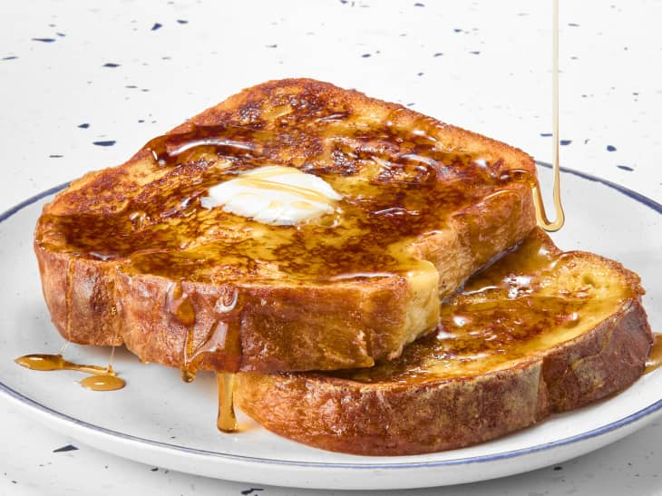

French Toast

Description
Indulge in our signature French Toast, crafted with thick slices of brioche bread, perfectly soaked in a rich custard of eggs, vanilla, and a hint of cinnamon. Griddled to golden perfection, it’s served warm and dusted with powdered sugar. Topped with fresh berries and a drizzle of maple syrup, this delightful dish promises a sweet start to your day!
Ingredients
- 4 thick slices of brioche or challah bread
- 2 large eggs
- 1/2 cup milk (whole or your choice)
- 1 tsp vanilla extract
- 1/2 tsp ground cinnamon
- pinch of salt
- butter
- powdered sugar
- fresh berries and maple syrup(garnish)
Steps
- Prepare the Batter: In a mixing bowl, whisk together the eggs, milk, vanilla extract, cinnamon, and salt untill well combined
- Preheat the Pan Heat a skillet or griddle over medium heat. Add a TB of butter to coat the pan.
- Soak the Bread: Dip one slice of bread into the egg mixture, ensure both sides are well coated. Let it soak for about 15-30 seconds.
- Cook the Bread Place the soaked bread slice onto the hot surface. Cook for 2-4 minutes until golden brown, then flip and cook the other side for another 2-4 minutes.
- Repeat: Repeat the soaking and cooking process with remaining slices, adding more butter when necessary.
- Serve: Once toast is cooked, stack on a plate and dust with powdered sugar and top with garnishes.